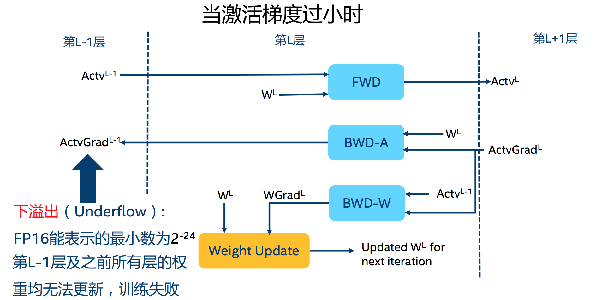

你想获得双倍训练速度的快感吗？
你想让你的显存空间瞬间翻倍吗？
如果我告诉你只需要三行代码即可实现，你信不？
在这篇博客里，瓦砾会详解一下混合精度计算（Mixed Precision），并介绍一款Nvidia开发的基于PyTorch的混合精度训练加速神器—Apex，最近Apex更新了API，可以用短短三行代码就能实现不同程度的混合精度加速，训练时间直接缩小一半。
话不多说，直接先教你怎么用。
PyTorch实现
1 | from apex import amp |
对，就是这么简单，如果你不愿意花时间深入了解，读到这基本就可以直接使用起来了。
但是如果你希望对FP16和Apex有更深入的了解，或是在使用中遇到了各种不明所以的“Nan”的同学，可以接着读下去，后面会有一些有趣的理论知识和瓦砾最近一个月使用Apex遇到的各种bug，不过当你深入理解并解决掉这些bug后，你就可以彻底摆脱“慢吞吞”的FP32啦。
理论部分
为了充分理解混合精度的原理，以及API的使用，先补充一点基础的理论知识。
1. 什么是FP16？
半精度浮点数是一种计算机使用的二进制浮点数数据类型，使用2字节（16位）存储。
其中，sign位表示正负，exponent位表示指数（$2^{n-15+{1}(n=0)}$），fraction位表示的是分数（$\frac{m}{1024}$）。其中当指数为零的时候，下图加号左边为0，其他情况为1。
2. 为什么需要FP16？
在使用FP16之前，我想再赘述一下为什么我们使用FP16。
减少显存占用
现在模型越来越大，当你使用Bert这一类的预训练模型时，往往显存就被模型及模型计算占去大半，当想要使用更大的Batch Size的时候会显得捉襟见肘。由于FP16的内存占用只有FP32的一半，自然地就可以帮助训练过程节省一半的显存空间。加快训练和推断的计算
与普通的空间时间Trade-off的加速方法不同，FP16除了能节约内存，还能同时节省模型的训练时间。在大部分的测试中，基于FP16的加速方法能够给模型训练带来多一倍的加速体验（爽感类似于两倍速看肥皂剧）。张量核心的普及
硬件的发展同样也推动着模型计算的加速，随着Nvidia张量核心（Tensor Core）的普及，16bit计算也一步步走向成熟，低精度计算也是未来深度学习的一个重要趋势，再不学习就out啦。
3. FP16带来的问题：量化误差
这个部分是整个博客最重要的理论核心。
讲了这么多FP16的好处，那么使用FP16的时候有没有什么问题呢？当然有。FP16带来的问题主要有两个：1. 溢出错误；2. 舍入误差。
溢出错误（Grad Overflow / Underflow）
由于FP16的动态范围（$6 \times 10^{-8} \sim 65504$）比FP32的动态范围（$1.4 \times 10^{-45} \sim 1.7 \times 10^{38}$）要狭窄很多，因此在计算过程中很容易出现上溢出（Overflow，$g>65504$）和下溢出（Underflow，$g<6\times10^{-8}$）的错误，溢出之后就会出现“Nan”的问题。在深度学习中，由于激活函数的的梯度往往要比权重梯度小，更易出现下溢出的情况。

舍入误差（Rounding Error）
舍入误差指的是当梯度过小，小于当前区间内的最小间隔时，该次梯度更新可能会失败，用一张图清晰地表示：
4. 解决问题的办法：混合精度训练+动态损失放大
混合精度训练（Mixed Precision）
混合精度训练的精髓在于“在内存中用FP16做储存和乘法从而加速计算，用FP32做累加避免舍入误差”。混合精度训练的策略有效地缓解了舍入误差的问题。损失放大（Loss Scaling）
即使用了混合精度训练，还是会存在无法收敛的情况，原因是激活梯度的值太小，造成了下溢出（Underflow）。损失放大的思路是：- 反向传播前，将损失变化（dLoss）手动增大$2^k$倍，因此反向传播时得到的中间变量（激活函数梯度）则不会溢出；
- 反向传播后，将权重梯度缩$2^k$倍，恢复正常值。
Apex的新API：Automatic Mixed Precision (AMP)
曾经的Apex混合精度训练的api仍然需要手动half模型已经输入的数据，比较麻烦，现在新的api只需要三行代码即可无痛使用：1
2
3
4from apex import amp
model, optimizer = amp.initialize(model, optimizer, opt_level="O1") # 这里是“欧一”，不是“零一”
with amp.scale_loss(loss, optimizer) as scaled_loss:
scaled_loss.backward()
opt_level
其中只有一个
opt_level需要用户自行配置：O0：纯FP32训练，可以作为accuracy的baseline；O1：混合精度训练（推荐使用），根据黑白名单自动决定使用FP16（GEMM, 卷积）还是FP32（Softmax）进行计算。O2：“几乎FP16”混合精度训练，不存在黑白名单，除了Batch norm，几乎都是用FP16计算。O3：纯FP16训练，很不稳定，但是可以作为speed的baseline；
动态损失放大（Dynamic Loss Scaling）
AMP默认使用动态损失放大，为了充分利用FP16的范围，缓解舍入误差，尽量使用最高的放大倍数（$2^{24}$），如果产生了上溢出（Overflow），则跳过参数更新，缩小放大倍数使其不溢出，在一定步数后（比如2000步）会再尝试使用大的scale来充分利用FP16的范围：
干货：踩过的那些坑
这一部分是整篇博客最干货的部分，是瓦砾在最近在apex使用中的踩过的所有的坑，由于apex报错并不明显，常常debug得让人很沮丧，但只要注意到以下的点，95%的情况都可以畅通无阻了：
- 判断你的GPU是否支持FP16：构拥有Tensor Core的GPU（2080Ti、Titan、Tesla等），不支持的（Pascal系列）就不建议折腾了。
- 常数的范围：为了保证计算不溢出，首先要保证人为设定的常数（包括调用的源码中的）不溢出，如各种epsilon，INF等。
- Dimension最好是8的倍数：Nvidia官方的文档的2.2条表示，维度都是8的倍数的时候，性能最好。
- 涉及到sum的操作要小心，很容易溢出，类似Softmax的操作建议用官方API，并定义成layer写在模型初始化里。
- 模型书写要规范：自定义的Layer写在模型初始化函数里，graph计算写在forward里。
- 某些不常用的函数，在使用前需要注册：
amp.register_float_function(torch, 'sigmoid') - 某些函数（如einsum）暂不支持FP16加速，建议不要用的太heavy，xlnet的实现改FP16困扰了我很久。
- 需要操作模型参数的模块（类似EMA），要使用AMP封装后的model。
- 需要操作梯度的模块必须在optimizer的step里，不然AMP不能判断grad是否为Nan。
- 欢迎补充。。。
总结
这篇从理论到实践地介绍了混合精度计算以及Apex新API（AMP）的使用方法。瓦砾现在在做深度学习模型的时候，几乎都会第一时间把代码改成混合精度训练的了，速度快，精度还不减，确实是调参炼丹必备神器。目前网上还并没有看到关于AMP以及使用时会遇到的坑的中文博客，所以这一篇也是希望大家在使用的时候可以少花一点时间debug。当然，如果读者们有发现新的坑欢迎交流，我会补充在博客中。